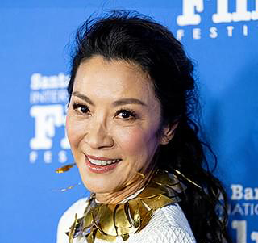
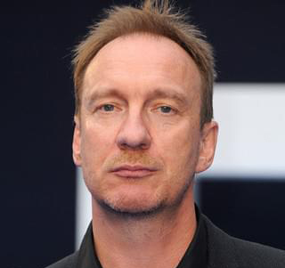

CAST
映画『The Lady』の主要キャストを紹介します。
Main Cast

Michelle Yeoh
アウンサンスーチー役
ミシェル・ヨーは、マレーシア出身の世界的に有名な女優です。 アクション映画やドラマ作品で高い評価を受けており、その演技力は世界中で認められています。 本作『The Lady』では、ミャンマーの民主化運動の指導者であり、 ノーベル平和賞受賞者でもあるアウンサンスーチーを演じました。 ヨーは実際のスーチーの話し方や仕草を研究し、 彼女の強さ、優しさ、そして信念を見事に表現しています。 長年にわたり自宅軟禁を受けながらも民主主義のために闘い続けた スーチーの人生を、感動的かつリアルに描き出しています。

David Thewlis
マイケル・アリス役
デヴィッド・シューリスは、イギリスを代表する実力派俳優です。 映画やテレビドラマで幅広く活躍し、深みのある演技で知られています。 本作ではアウンサンスーチーの夫であるマイケル・アリスを演じました。 マイケルは家族を支えながら、妻が祖国のために活動を続けることを理解し、 遠く離れていても愛情を持って支え続けました。 シューリスは、夫としての優しさや苦悩、そして強い献身を繊細に表現し、 作品の感動をより深いものにしています。
About Cast
本作品では、俳優たちが実在の人物をリアルに演じ、 物語に深い感動を与えています。